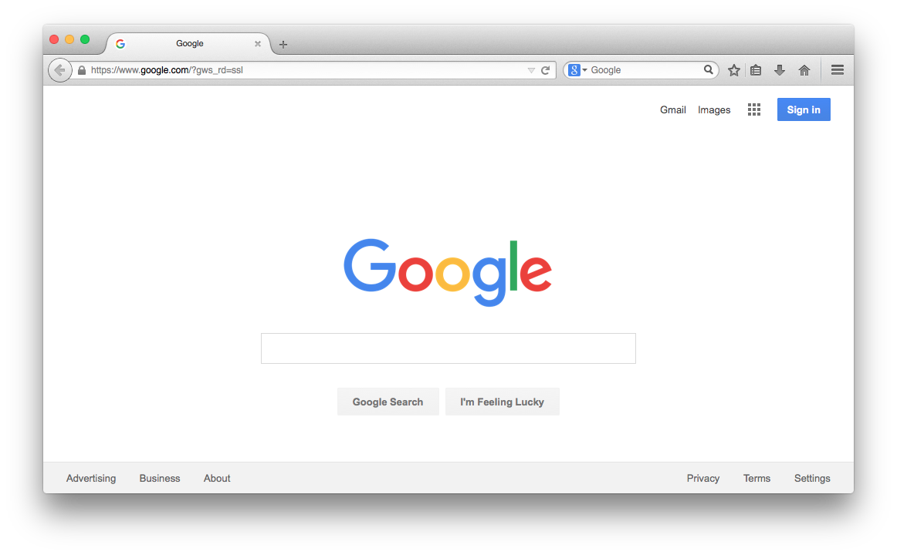
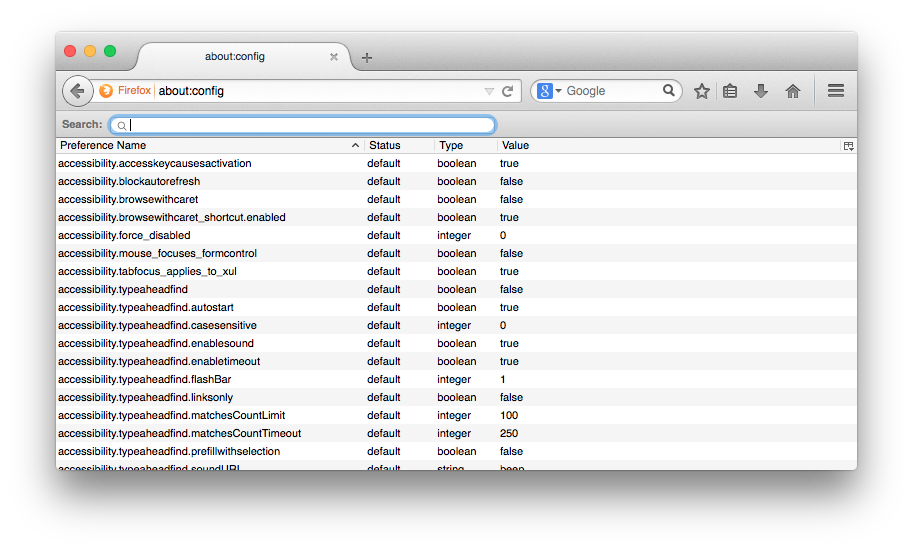
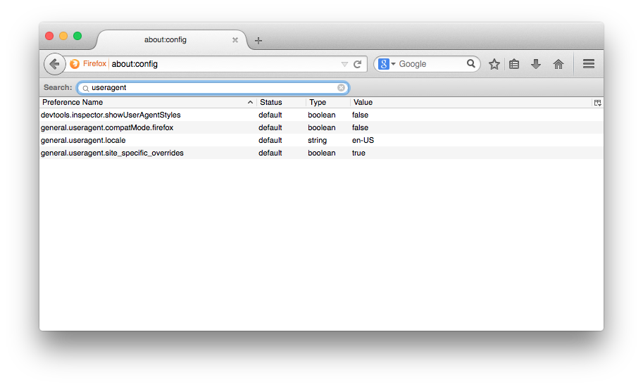
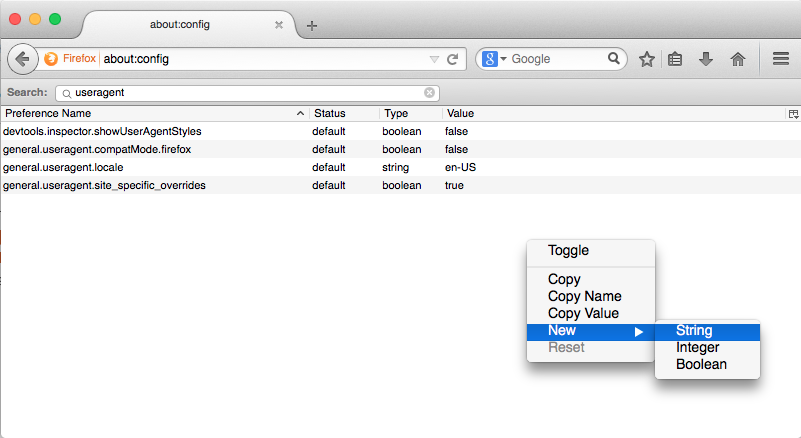
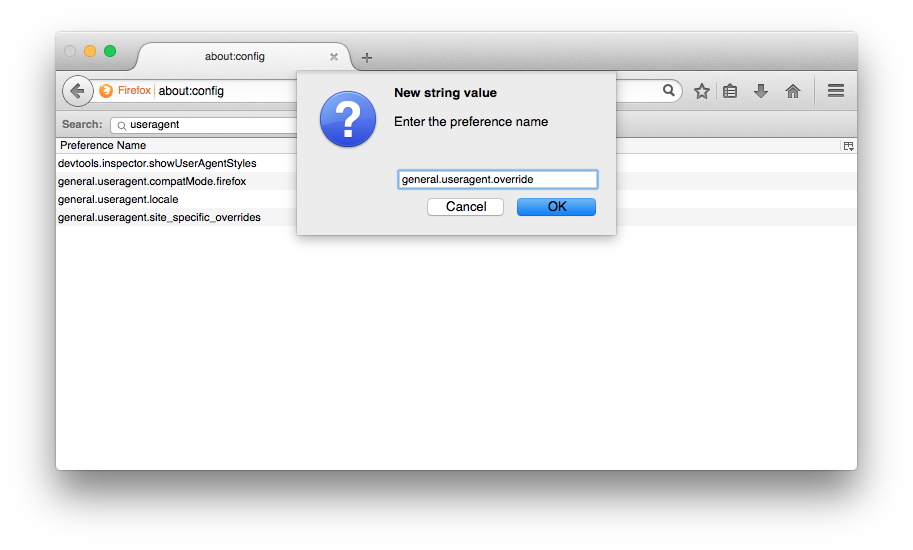
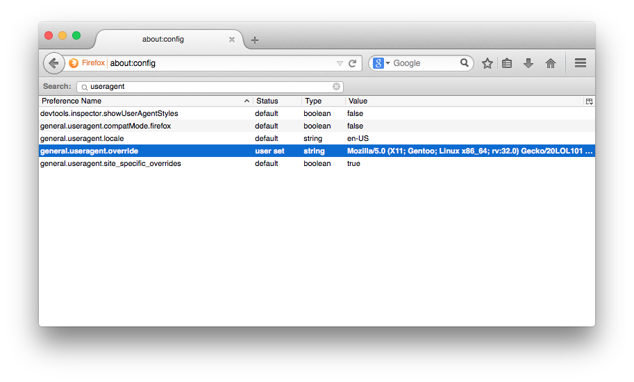
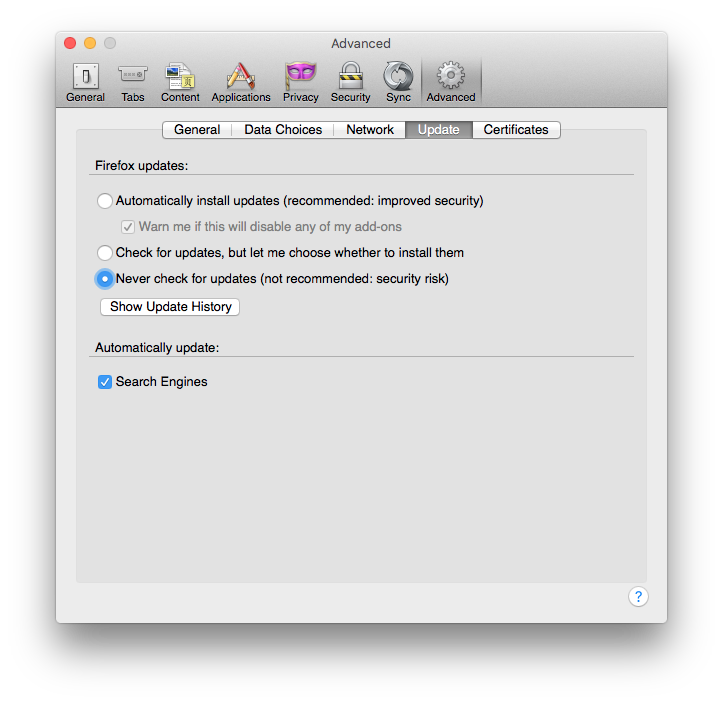
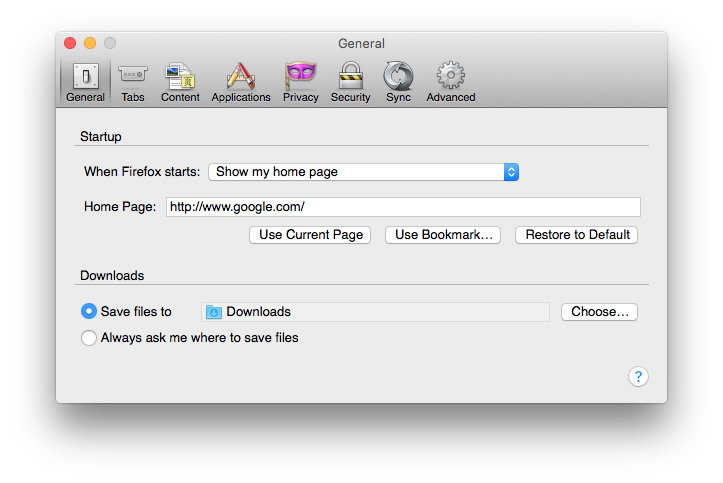

about:config
useragent

general.useragent.override and click 'OK'
Mozilla/5.0 (X11; Gentoo; Linux x86_64; rv:32.0) Gecko/20150207 Firefox/32.0 and click 'OK'
When Firefox updates itself, it removes the general.useragent.override string, which will change the useragent back to the default agent for a Mac. We don't want that.
Go to 'Firefox' -> 'Preferences' in the menu bar
Click 'Advanced', then 'Update', and select the option that says "Never check for updates"

Click 'General' in the Preferences window
For 'Home Page:' type in www.google.com

Anytime you see that stupid "SafeConnect" message, just open Firefox and refresh it a few times. Once Firefox can load the Google search page, you can close it and open your usual web browser.
Avast and Sophos can now go screw themselves.
Copyright © wheelsandbytes 2015-2017. All Rights Reserved